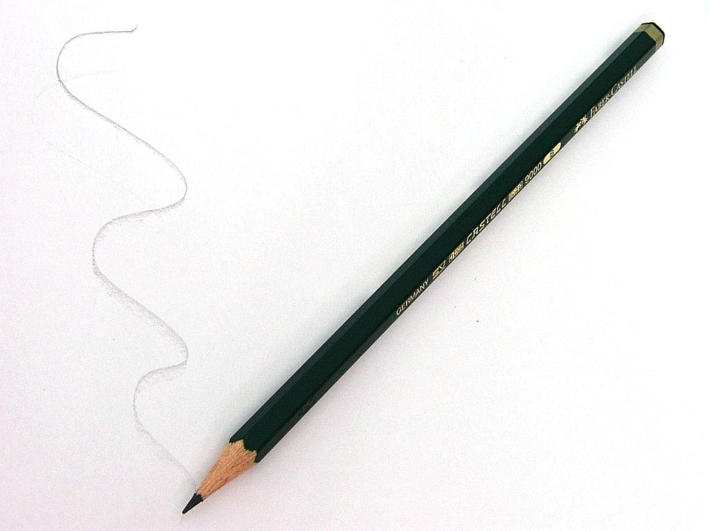
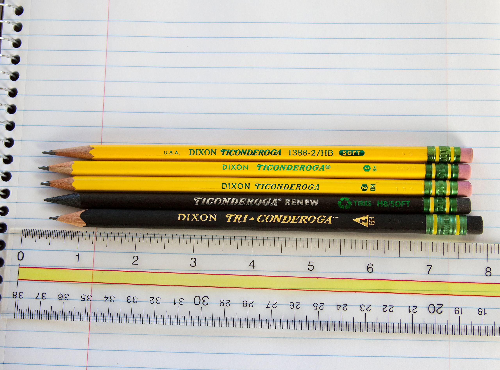

Про́сти́й або графі́тний (чорнографі́тний) оліве́ць — інструмент для письма, малювання чи креслення, у якому тонка пи́сна графітна серцевина вкладена в оболонку з іншого матеріалу. Оболонка в олівцях найчастіше дерев'яна, але може бути з пластику або з переробленого паперу. Головна умова для матеріалу оболонки — він повинен легко застругуватися у побутових умовах.
Простий олівець — екологічно чистий інструмент для письма, портативний, написане ним за потреби може бути стерто майже безслідно, функціонує в тропічну спеку й арктичний холод, причому написане не втрачає кольору ні з часом, ні від сонячного проміння. У літературі інколи можна зустріти, що одного графітного олівця вистачає на лінію завдовжки 56 км[1] або щоб написати 45 тис. слів. Втім, немає ніде підтвердження, що цей факт хтось перевірив на практиці
Перші письмові інструменти, схожі на сучасні олівці, з'явилися у XI столітті. Це були палички зі свинцю та срібла із загостреними кінцями. Вони досить швидко зношувалися, коштували дорого й були доступні лише заможним людям. Найбільшого поширення такі палички набули в Німеччині, де рисувальне мистецтво зародилося й розвивалося швидше, ніж в інших країнах Перші олівці в теперішньому розумінні з'явилися в Англії наприкінці XVI століття. У горах Камберленду поблизу Кесвіка[en] 1564 року пастух під корінням поваленого бурею дуба знайшов чорне каміння. Спочатку він подумав, що це вугілля, але воно не горіло, зате добре згодилося для мічення овець. Користь від знахідки відразу ж оцінили і цей рудник був привласнений урядом. Чорне каміння в поштових каретах під охороною вивозили до Лондона. Матеріал визнали корисним навіть у медицині, але головним його застосуванням стало виробництво форм для відливання гарматних ядер. Довгий час чорний камінь називали «вод» (англ. wad — «купка каміння») і навіть донедавна такою ж була місцева назва графітних олівців[6], а рудник, де добувався графіт, і донині називається «Вод Майн» (англ. Wad Mine)
Перший опис олівця — шматка Камберлендського графіту вставленого в порожнину на кінці дерев'яної палички — опубліковано 1565 року Конрадом Геснером із Цюриха. Довгий час такі олівці називали «олівцями Геснера». Подібним користувався Вільям Шекспір. Але у графітових стрижнів було два головні недоліки — вони бруднили пальці й легко ламалися.
Послідовність операцій при виготовленні олівця. Верхній ряд — старовинний метод, з використанням шматка графіту. Нижній ряд — сучасна технологія з використанням випаленої суміші графіту й глини
Лише 1779 року шведський хімік Карл Шеєле довів, що камберлітові палички містять не свинець, а вуглець. Назву цьому матеріалу дав німецький мінералог А. Вернер — der Graphit (від дав.-гр. γράφω — «записую, пишу»). Але помилка в назві вже прижилася в побуті. В англійській мові «графіт» має синонім plumbago, що дослівно означає «такий, як свинець». Слово pencil («олівець») в англійській мові походить від давньофр. pincel, яке у свою чергу пішло від penicillus, яким називався тоненький пензлик для письма, виготовлений із шерсті верблюда (цікаво, що від нього через німецьке посередництво походить і «пензель»)[12]. Німецьке слово Bleistift (дослівно — свинцева паличка) перекладається як «олівець». І японські ієрогліфи 鉛筆 «ен» і пітсу, що разом позначають олівець, дослівно значать «свинцевий пензель». В українській мові слово «олівець» походить від слова «олово», яким колись називали свинець (аналогічне походження має і пол. ołówek, біл. аловак). Олов'яними (по-нинішньому — свинцевими) паличками колись писали на папері.
Революційним для олівцевої індустрії став винахід, зроблений французом Ніколя Жаком Конте 1795 року. Франція на той час була економічно ізольована від Німеччини та Англії, тому олівці з Камберленду, до яких французи вже звикли, до країни більше не надходили. Конте після року експериментів придумав змішувати порошок графіту з глиною й водою. Отриману пасту він втирав у канавки, вирізані в дереві. Коли суміш у канавках висихала, отримані стрижні виймали й обпікали в керамічних футлярах, а потім вкладали в канавки у дерев'яних паличках і заливали клеєм[14].Через три роки подібну технологію повторив австрієць Йозеф Гардтмут[de]. Гардтмут був власником невеликого керамічного заводу й для маркування своїх виробів використовував англійські олівці, оскільки лише графіт витримував високу температуру гончарних печей. Для зменшення витрат на дуже дорогі олівці з Німеччини та Англії, Гардтмут експериментальним шляхом винайшов метод виготовлення графітних стрижнів із суміші очищеного графітного порошку й глини тонкого помелу. З вологої суміші у спеціальних канавках формувалися стрижні, потім вони висушувалися й спікалися в гончарних печах. Утворені палички оброблялися жиром або олією. Їхня твердість залежала від співвідношення часток графіту та глини. Це були перші у світі графітні стрижні з контрольованою твердістю. Виробництво їх виявилося настільки вигідним, що фірма Гардтмута згодом повністю переробила керамічні цехи на нову продукцію. Тепер уже неможливо напевно сказати, чи Гардтмут самотужки повторив винахід Конте, чи якось про нього дізнався, але еволюція олівця зробила різкий стрибок уперед.
Найбільшим виробником олівців в Америці й одним з найбільших у світі є компанія Діксон Тікондерога[en]. 1999 року компанія перевела все виробництво в інші країни, тобто, традиційні американські олівці вже більше не є «made in USA»
Олівці вироблені Dixon Ticonderoga Company.
Прості олівці за цільовим призначенням поділяють на шкільні, канцелярські, креслярські, рисувальні, сувенірні, рекламно-представницькі. Цей поділ досить умовний, оскільки графітні олівці є універсальним письмовим інструментом.
Простота олівця та його незамінність у сучасному побуті зробили цей винахід частиною культури суспільства. Йому присвячені художні твори, як, наприклад, оповідання Івана Франка «Олівець», невеличка поема Карла Сендберга «Олівці». Знамениті письменники — Ернест Хемінгуей, Джон Стейнбек віддавали перевагу олівцю і, поки застругували його кишеньковим ножем, обмірковували наступні фрази своїх творів
Олівцю ставили пам'ятники, а оскільки він надто малий для монументів у натуральну величину, то інколи робили їх велетенськими. Найбільший у світі олівець виготовила група волонтерів у Нью-Йорку 2007 року. Важить він майже 8,2 тонни, а його довжина становить приблизно 23,2 м. Після виготовлення олівець подарували музею міста Сент-Луїс у штаті Міссурі. Рекорд занесено до книги рекордів Гіннеса[68]. Минулий рекорд належав олівцю, виготовленому 2002 року в Малайзії фірмою «Faber-Castell». Його довжина становить приблизно 19,5 м. Зберігається він у спеціальній вертикальній захисній скляній конструкції поряд із центральним офісом фірми в Куала-Лумпур